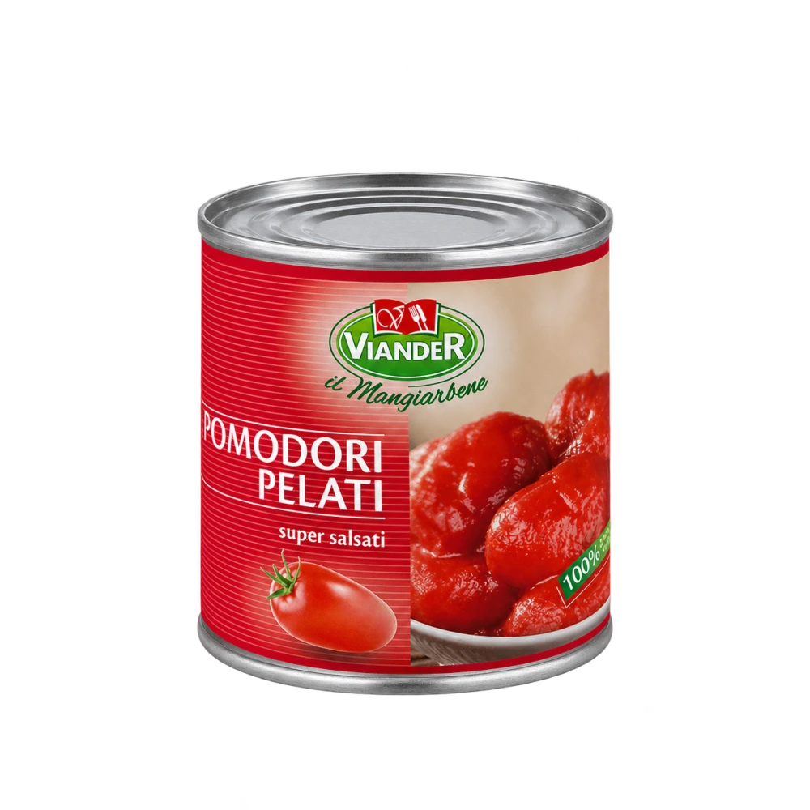
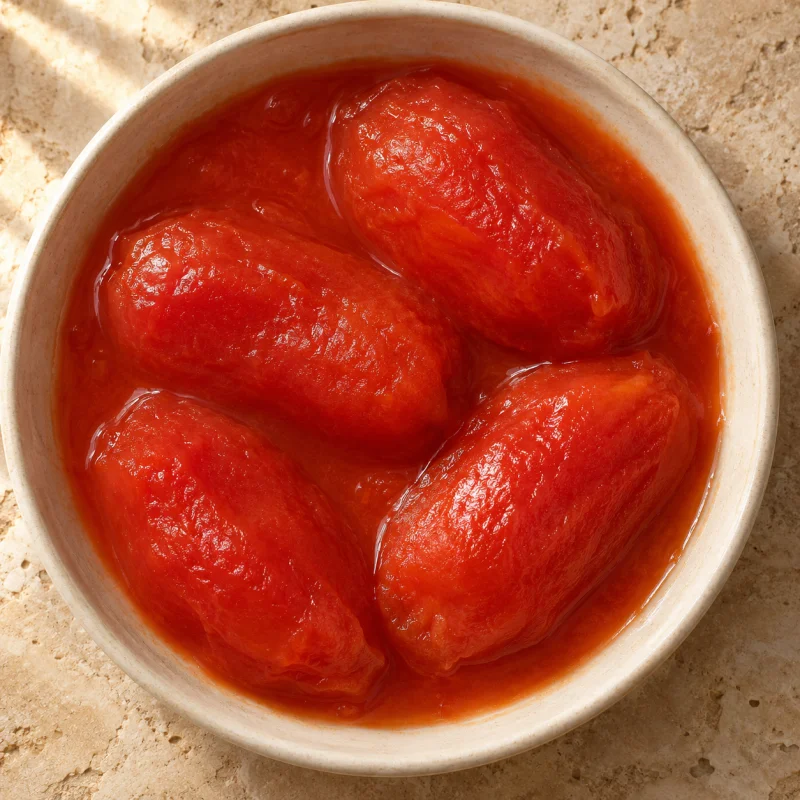

Textura sob seu controle
Esmague ou processe os tomates conforme a receita: de pedaços mais rústicos a uma base mais uniforme.
POMODORO ITALIANO

LATA 2,550 kgVIANDER · ORIGEM ITALIANA
A liberdade de trabalhar a textura. O prazer do sabor italiano.
Tomates inteiros, pelados e em conserva, cultivados na Itália. Para quem gosta de construir o molho desde a textura e dar personalidade a cada receita.

Tomates inteiros para criar.Compare as texturas Imagem ilustrativaConsulte disponibilidade, frete e condições com a equipe comercial.
UM INGREDIENTE, MUITAS POSSIBILIDADES
Esmague ou processe os tomates conforme a receita: de pedaços mais rústicos a uma base mais uniforme.
Uma opção para molhos de massa, bases de pizza, lasanhas, sopas e outras criações da cozinha.
Os tomates já vêm pelados, dispensando essa etapa de preparo na sua operação.
NA PRÁTICA
Um ponto de partida para adaptar à rotina e ao cardápio da sua cozinha.
Esmague ou processe os tomates na intensidade adequada para o seu molho.
Combine com os ingredientes da sua receita e ajuste o uso do líquido da conserva à consistência desejada.
Defina a cocção de acordo com o prato e termine com os temperos da casa.
INFORMAÇÕES DO PRODUTO
Precisa da ficha técnica? Solicite à equipe comercial.
Solicitar ficha técnicaTomate Pelati Salsati Viander é apresentado em lata de 2,550 kg, de origem italiana.
Indicado para molhos rústicos, massas e pizzas. Ajuste tempero, textura e preparo conforme a sua receita.
Fale com a equipe comercial pelo WhatsApp (11) 99936-5401 ou pelo e-mail vendas@viander.com.br. Informe cidade, produto e volume para receber as condições de compra.
Consulte o rótulo do produto e as informações do lote para ingredientes, alergênicos, validade e conservação antes e após a abertura. Solicite a ficha técnica à equipe comercial se precisar de mais detalhes.